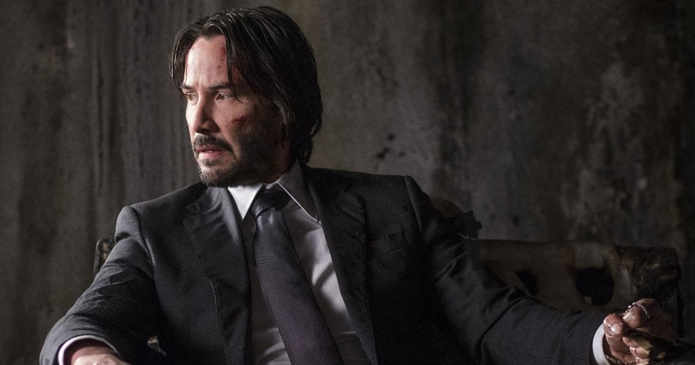

About JOHN WICK
John Wick, portrayed by Keanu Reeves, is an iconic character in contemporary action cinema, known for his relentless pursuit of vengeance and a profound sense of honor. The franchise has captivated audiences with its blend of stylized action, intricate world-building, and deep emotional undertones.John Wick, a character brought to life by Keanu Reeves, is not just a fictional assassin; he embodies a complex blend of resilience, honor, and tragedy that resonates deeply with audiences. His journey reveals profound themes of loss, love, and the quest for redemption.
Character Overview
John Wick's Journey
Initially introduced in the 2014 film John Wick, the character is a retired hitman who is drawn back into the violent underworld after the tragic loss of his wife and the subsequent killing of his beloved dog, a final gift from her. This event sets off a chain reaction of violence that defines the series. Wick's character is marked by his exceptional combat skills, unwavering determination, and a moral code that often contrasts with the brutality surrounding him.
Cinematic Legacy
The John Wick franchise has become a cultural phenomenon, influencing action films with its unique choreography and world-building. The films explore themes of loss, revenge, and redemption while showcasing Wick's struggle against an unforgiving society. Notable quotes from the series encapsulate his ethos: "People keep asking if I'm back, and I haven't really had an answer," which reflects his internal conflict and commitment to his past life.